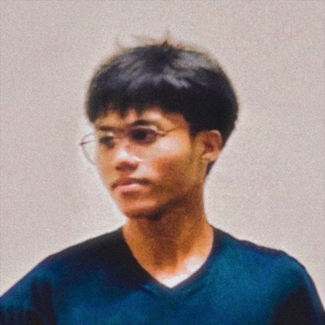
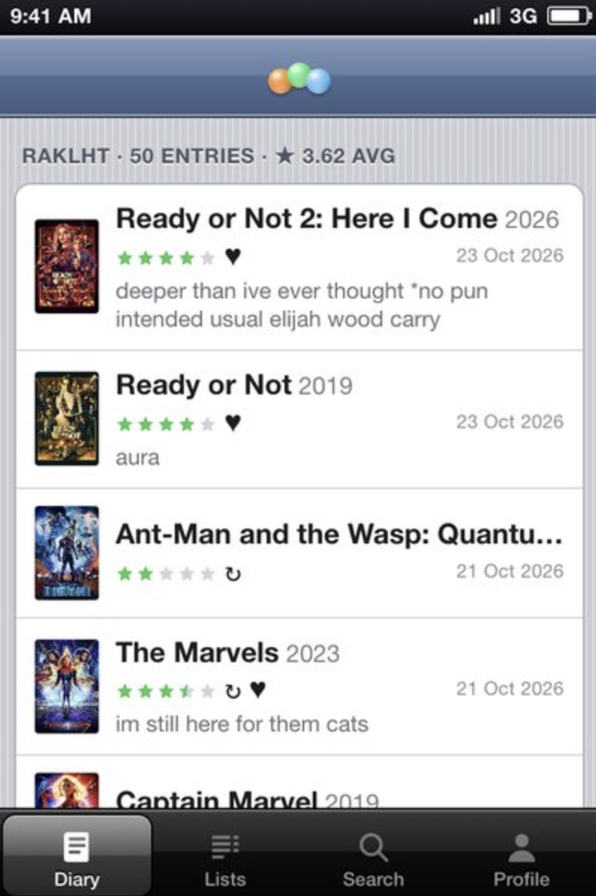
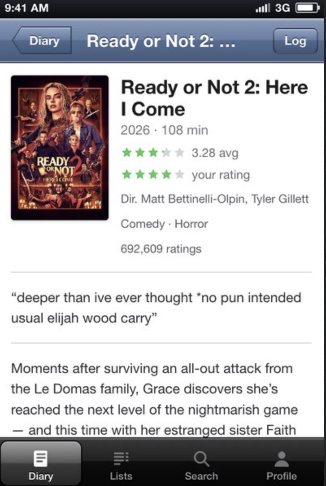
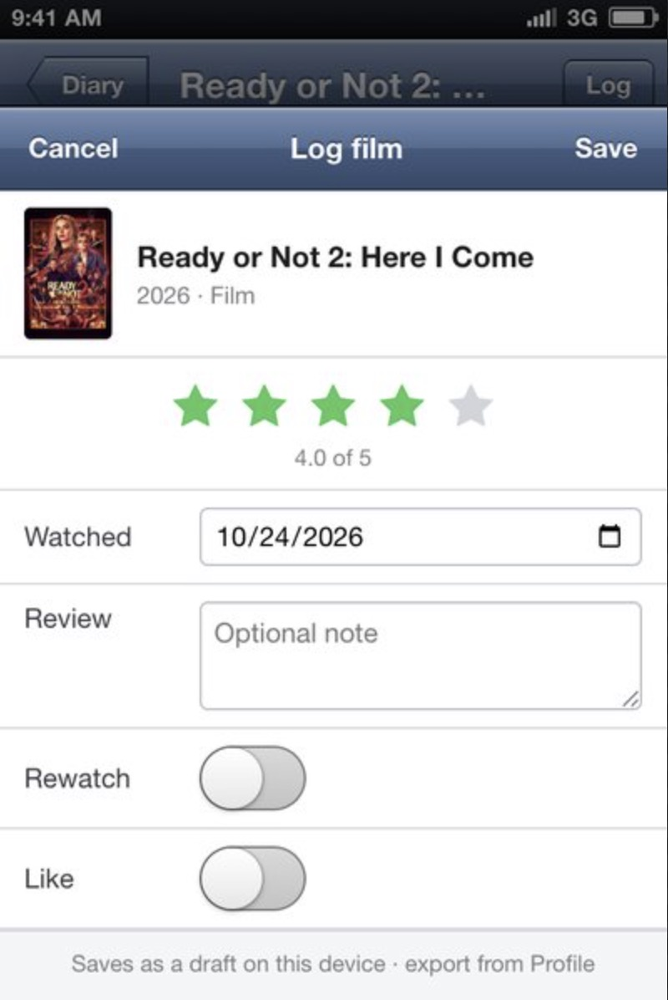

kerth@portfolio:~$ whoami
Kerth Michael
Yadao
Hi, thanks for stopping by!
- System
- [OK] Portfolio v2.0 loaded
- Role
- [OK] IT Support Specialist & Virtual Assistant
- Location
- [OK] Manila, Philippines · UTC+8
- Experience
- [OK] 2 yrs corporate CX
- Status
- [LIVE] Open to remote work
System ready. Scroll to explore.

cat ./about.txt
From corporate
to your remote team
I'm Kerth Michael Yadao, a professional based in Manila, Philippines. Over the past two years at one of the leading real estate technology companies globally — I've gone from inbound calls to handling escalated cases directly with management.
I'm transitioning into remote work because I want to explore more with international clients, grow beyond the call center environment, and apply what I know in a more flexible, results-driven setup.
Available Full-Time
Ready for 40-hour/week remote engagements or part-time VA roles
English Fluent
Strong written and spoken communication with a professional tone
Tech-Ready
IT background + CRM work history
Process-Minded
Lean Six Sigma training means I think in systems, not just tasks
ls ./services
How I can help you
Every skill below comes from two years of actual corporate work and here's what I bring to the table.
Real Estate Admin VA
Appointment setting for property viewings, tenant communications, maintenance coordination, and CRM updates.
Inbound Customer Support
Handling high-volume inbound calls, resident and client inquiries, escalation triage, and case logging. Experienced in staying calm and solution-focused under pressure.
CRM & Data Management
Creating and updating records, managing case logs, building reports, and maintaining clean data across Salesforce and other CRM platforms.
Appointment Setting
Scheduling and confirming property viewings, service appointments, and prospect calls. Coordinating between parties and keeping records updated in the CRM.
Documentation & Reports
SOPs, meeting notes, case documentation, and basic reports using Microsoft 365. Accurate, clearly formatted, and delivered on time.
Maintenance Dispatch Support
Receiving and logging maintenance requests, coordinating with the relevant teams, and managing resident expectations throughout the process — accurately and without over-promising.
cat ./stack.txt
Tools I know
cat ./experience.log
Work Experience
Customer Care Associate
Elevated to a dedicated escalation-handling role. Worked directly with corporate management to resolve complex client issues and maintained accurate case records through Salesforce.
Contact Center Associate I
Handled inbound maintenance calls and appointment setting for residential leasing prospects. Worked across Genesys Cloud, Salesforce, and property management CRMs to support multifamily real estate clients.
Customer Service Representative
Handled chat support for a sports streaming startup. Built foundational experience in high-volume digital support environments.
ls ./projects
Things I build
Two projects running on hardware I own and control. One keeps my data off other people's servers; the other keeps a 2012 phone useful.
I administer an Ubuntu Linux server running 15+ containerized services through Portainer — photo management, cloud storage, music streaming, password management, DNS-level ad blocking, and uptime monitoring. Caddy handles reverse proxying across every service, Tailscale gives me secure remote access from anywhere, and I split persistent storage across an internal SSD and an external HDD with a mix of read-only and read/write access controls.
A native Letterboxd client for iOS 6. Browse your diary, open a film, and log what you've watched with a rating, a review, a rewatch or a like — running as an app on a 2012 iPhone.
A fun side project, and a good excuse to keep an old phone in use. It's styled to match the phone it runs on: those blue nav bars, shaped back buttons and green stars.
ls ./screenshots



Personal, non-commercial project. Not affiliated with, endorsed by, or supported by Letterboxd — all film data and artwork belong to Letterboxd and its contributors.
cat ./music.txt
Music & Creativity
Outside of work, I compose and produce original music. My debut album Trajectories, a personal project of mine that I'm genuinely proud of.
Trajectories
Composed, arranged, and produced entirely by me. Made in my small bedroom.
And if you work in podcasting, media, or content creation, I understand the space firsthand and bring that sensibility to every project.
./contact --now
Ready to start?
If you need someone reliable — feel free to reach out.
i make it happen if you'd give me a chance.